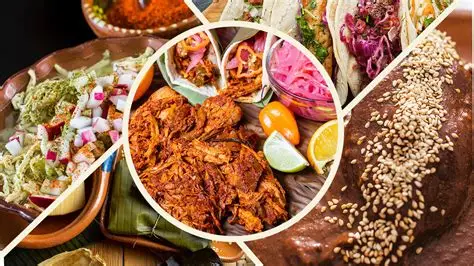
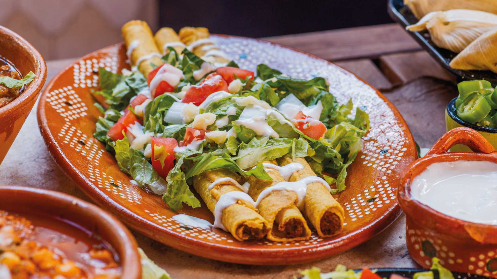

Las flautas son tortillas rellenas de carne que se fríen hasta quedar crujientes.
La gastronomía mexicana destaca por su variedad de ingredientes, sabores y técnicas tradicionales.
El maíz, chile, frijol y aguacate son algunos de los ingredientes característicos de México.
Los antojitos mexicanos forman parte de la cultura y las costumbres de diferentes regiones del país.
¿Cuál es un ingrediente tradicional mexicano?